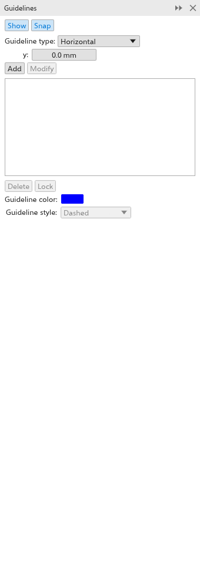

Deze pagina is nog niet vertaald en wordt in het Engels getoond.
Rulers, grids and guidelines
Rulers, grids and guidelines help you place objects precisely. None of them print.
Rulers
The rulers run along the top and left of the drawing window, in the drawing units; View > Rulers shows or hides them. A dashed line on each ruler follows the pointer.
- Drag from the corner where the rulers meet to move the origin, the point the rulers count from. Positions on the property bar, the status bar and in the panels count from it too.
- Drag from a ruler to add a guideline.
- Double-click a ruler to open its settings; see Document options, where you also set the units and the drawing scale.
The document grid
View > Grid > Document Grid shows a grid of lines or dots over the page, behind the objects; Document Grid in Snap To makes objects snap to it. Its spacing (10 mm at first) is set in Document options. When lines would be too close, only every second, fifth or tenth line is drawn.
The baseline grid (Baseline Grid) draws lines across the page like a ruled notebook, for lining up text; the pixel grid (Pixel Grid) shows the pixels of the drawing in the Pixels view from 800% zoom.
Guidelines
Guidelines are lines across the drawing window that objects can snap to.
- Drag from the top ruler for a horizontal guideline, from the left ruler for a vertical one.
- With the Pick tool, click a guideline to select it (Shift+click adds), and drag it to move it. Drop it outside the drawing window, or press Delete, to delete it.
- Click the selected guideline again to show its rotation handles, and drag them to turn it.
- Right-click a guideline to delete, lock or unlock it, or open its properties. Locked guidelines can be selected but not moved or deleted.
- Edit > Select All > Guidelines selects every guideline of the page, and Guidelines shows or hides them.
The Guidelines panel
The Guidelines panel places guidelines by their coordinates. Open it from Window > Panels.

- Show and Snap turn guidelines on and snapping to them.
- Choose the Guideline type: horizontal, vertical or angled.
- Type the position (x, y, and the Angle for an angled one), counted from the ruler origin.
- Click Add to add a guideline, or select one in the list and click Modify to move it.
The list shows the page's guidelines of that type (Ctrl+click to select several). Delete, Lock and Unlock act on the selected ones, and Guideline color and Guideline style (Solid, Dashed, Dotted or Dash dot) change their look.
Ready-made sets of guidelines (margins, columns, grids) are on the Guidelines page of the document options.